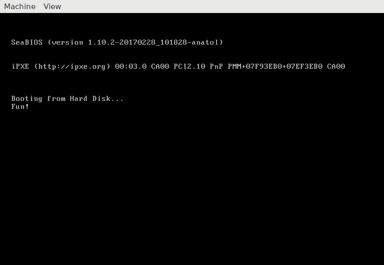

Walkthrough
How I imagined people would figure my puzzle out ...
So we have a binary ... let's have a look at what it is:
vshcmd: > xxd -p -r Puzzle.bin > challenge_binary
puzzle1 [15:32:08] $
vshcmd: > file challenge_binary
challenge_binary: ELF 32-bit LSB executable, Intel 80386, version 1 (SYSV), statically linked, stripped
puzzle1 [15:33:13] $
vshcmd: > chmod +x ./challenge_binary & ./challenge_binary
Magic words can be obtuse.
But reveal an alternate use.
Read, google, deduce.
puzzle1 [17:57:41] $
vshcmd: >
Huh. Not particularly useful, but it's a Linux x86 binary that prints out a string. That's piece of info number 1.
I guess run it in a debugger?
vshcmd: > gdb challenge_binary
Reading symbols from challenge_binary...(no debugging symbols found)...done.
(gdb)
vshcmd: > # No debugging symbols found? I guess `file` was wrong.
vshcmd: > start
No symbol table loaded. Use the "file" command.
(gdb)
vshcmd: > # Oh yeah, no symbols. I guess do this manually.
vshcmd: > info target
Symbols from "/<directory>/challenge_binary".
Local exec file:
`/<directory>/challenge_binary', file type elf32-i386.
Entry point: 0x804816c
0x0804816c - 0x08048400 is .text
(gdb)
vshcmd: > tbreak *0x804816c
Temporary breakpoint 1 at 0x804816c
(gdb)
vshcmd: > run
Starting program: /<directory>/challenge_binary
Temporary breakpoint 1, 0x08048163 in ?? ()
(gdb)
vshcmd: > display/i $pc
1: x/i $pc
=> 0x8048163: mov $0x4e,%edx
(gdb)
vshcmd: > stepi
...
Some time later
...
vshcmd: > stepi
0x0804817e in ?? ()
1: x/i $pc
=> 0x804817e: int $0x80
(gdb)
vshcmd: > stepi
[Inferior 1 (process 3320) exited with code 01]
(gdb)
Not helpful there either, just calls write(2) and
exit(2).
There is a lot of .text segment that goes unused:
0x08048163 - 0x08048400 is .text, while we
leave at 0x0804817e. There are no branch points, so it can't
be instructions for the binary. Why is it there?
I guess have a look at the hex again.
vshcmd: > xxd challenge_binary
00000000: 7f45 4c46 0101 0100 e9e4 0000 0000 0000 .ELF............
00000010: 0200 0300 0100 0000 6c81 0408 3b00 0000 ........l...;...
...
00000190: 0000 0000 0000 0000 0000 0000 0000 0000 ................
000001a0: 0000 0000 0000 0000 0000 0000 0000 0000 ................
...
00000220: 0000 0000 0000 0000 0000 0000 0000 0000 ................
00000230: 0000 0000 0000 0000 0000 0000 0000 0000 ................
...
000003e0: 0000 0000 0000 0000 0000 0000 0000 0000 ................
000003f0: 0000 0000 0000 0000 0000 0000 0000 0000 ................
puzzle1 [15:37:05] $
All zeros? What on earth is the point in that?
But it's not all zeros.
It's more obvious when running
objdump -D challenge_binary, but at offset 0x1fe
in the file there are the bytes 0x55 0xaa.
If we google that byte sequence we find references to the MBR -- the code
run after the BIOS has finished on an x86 machine.
The binary has the bootable marker, and looking back at that opaque clue we can see there is at least something that fits with our hunch.
Magic words can be obtuse.
But reveal an alternate use.
Read, google, deduce.
So I guess boot it?
... google how to boot an image ...
... few false starts due to unfamiliar program ...
vshcmd: > qemu-system-x86 -drive format=raw,file=challenge_binary
puzzle1 [16:08:55] $

Yay! The password is Fun!.
So yeah, it's a binary that is both a working x86 Linux ELF file, and a working MBR.